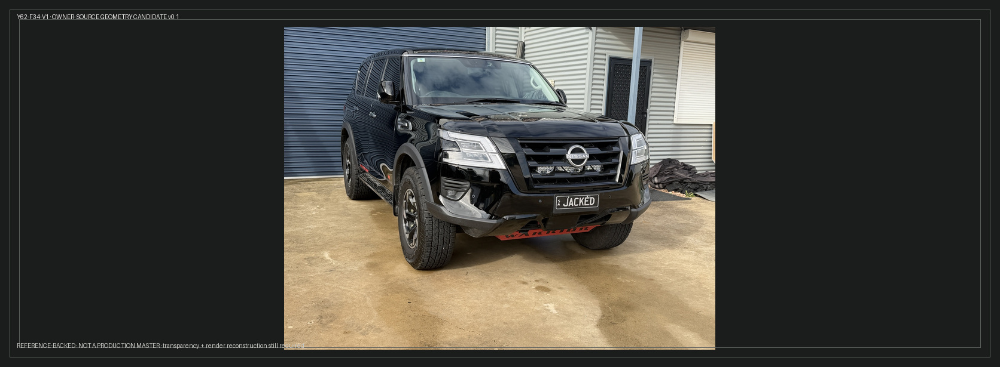
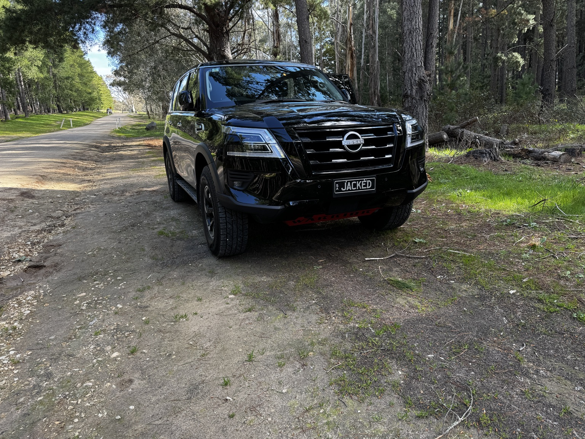
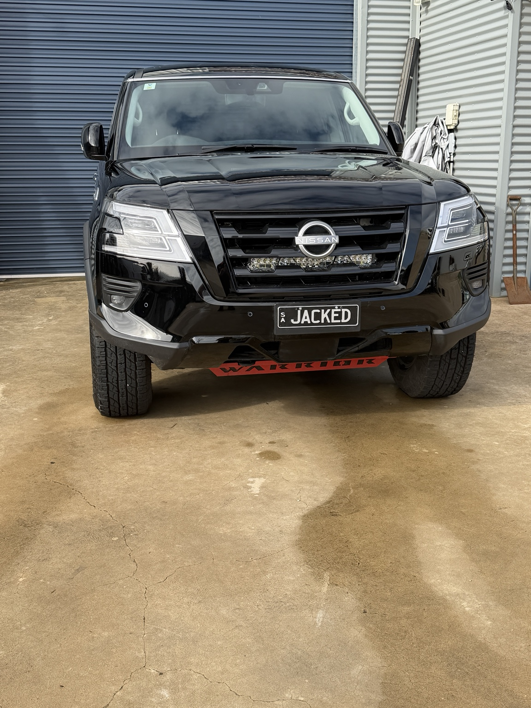

Y62-F34-V1 · Candidate 01
master-draftowner-source1672×615NOT PRODUCTION ELIGIBLE

What this candidate proves
Vehicle identity, fascia, factory Warrior wheel/tyre state and real Premcar stance are grounded in the owner's actual 2025 Series 5 Y62 Warrior. No synthetic body, wheel, trim or accessory geometry has been inserted into this candidate.
This board deliberately preserves the photographed background. It exists to approve camera/perspective geometry before a transparent canonical master is reconstructed.
Promotion blockers
| Gate | State |
|---|---|
| Identity | Evidence-backed |
| Factory wheels / stance | Evidence-backed |
| Camera/perspective | Manual review |
| Transparent isolation | Not started |
| Clean reconstruction | Not started |
| Locked-profile overlay | Not started |
Primary owner references



Next WF3 action
Approve or reject this F34 camera family as the geometry target. Once accepted, produce a clean transparent Y62-F34-V1 reconstruction that retains the owner-backed body, Warrior wheels/tyres and stance; then run manual overlay verification before any master-approved promotion.